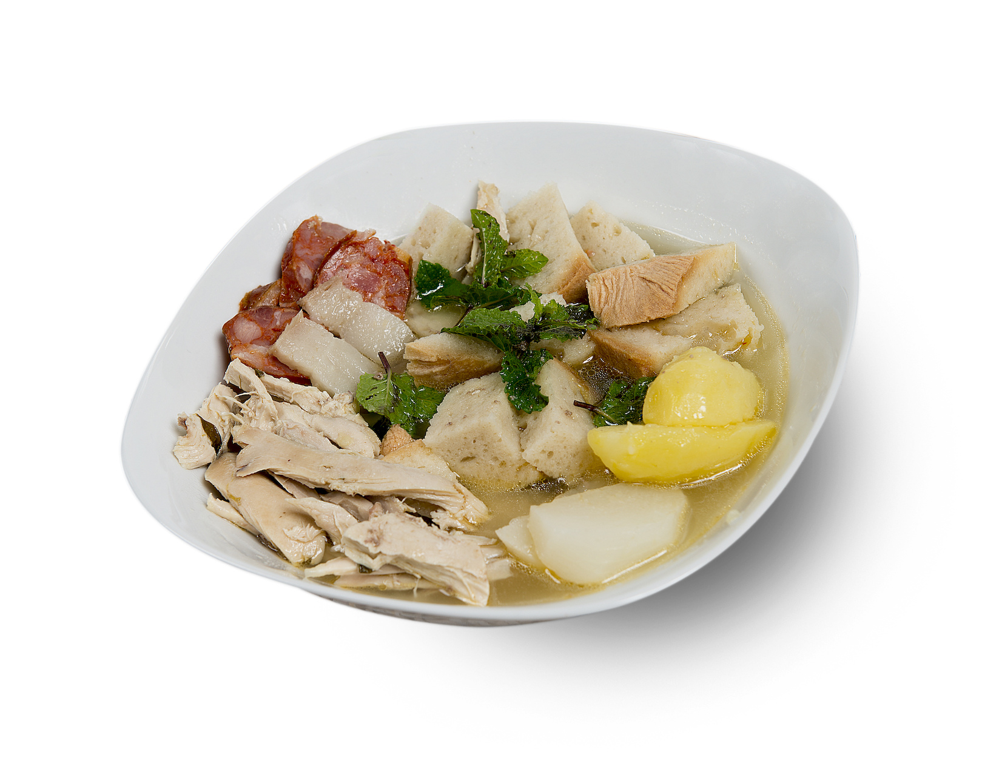

|
| Sopa da panela |
|  |
Descrição
Este é um prato português tipicamente alentejano.
é de fácil confecção mas muito saboroso.
|
Ingredientes
- Água
- Frango (partes)
- Chouriço alentejano
- Hortelã
- Batatas
- Cenouras
- Pão alentejano
|
Preparação
- Colocar uma panela ao lume com água e sal q.b
- Colocar o frango e o chouriço a cozer
- Passados 5 minutos colocamos as batatas e as cenouras a cozer
- Lascamos o pão alentejano
- Retirar as carnes e os legumes para uma travessa à parte
- Colocar hortelã na água da cozedura e reservar
- Servir com o pão lascado no prato e umas folhas de hortelã,
as carnes e os legumes e regar tudo com o caldo da cozedura.
|